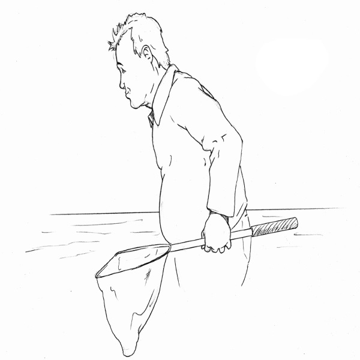

Illustr8
Works by James Wakelin
James Wakelin
Whether it’s a simple line drawing or a highly detailed rendering, we aim to produce works of excellence that meet your deadline, every time.
James Wakelin has been illustrating and designing since 1993
working for clients both in New Zealand and overseas, with personal commissions, editorial work and work for larger agencies.
Featured Works by James Wakelin